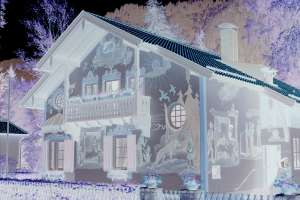
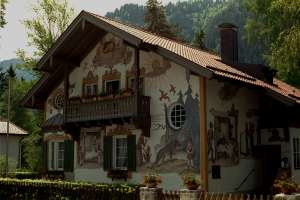
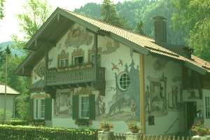
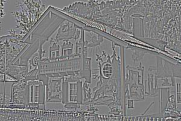
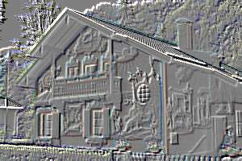
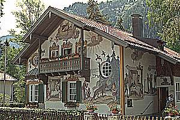
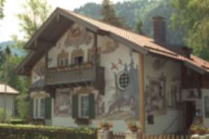
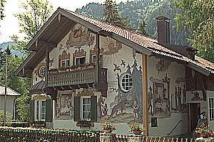
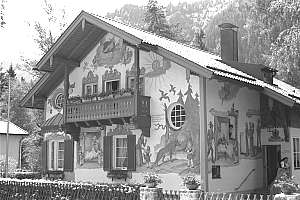
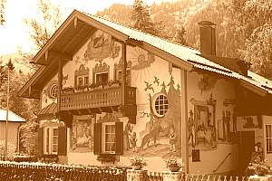

Filters and effects from PHP GD
There are a set of filters that are built in to PHP GD library. You can get an overview of these filters and their arguments by reviewing the documentation for imagefilter().

A house, kodimg24.png, from The Kodak Colorset.
Lets see some examples on using these filters. The base for all examples are:
?src=kodim24.png&w=300&save-as=jpg
#Filter Negate
This filter reverses all colors of the image.
| Usage | |
|---|---|
&f=negate |
 |
#Filter Grayscale
This filter converts the image into grayscale.
| Usage | |
|---|---|
&f=grayscale |
#Filter Brightness
This filter changes the brightness of the image. Use arg1 to set the level of brightness. 0 is current setting, 255 is max light which means white and -255 is max dark meaning black.
| Usage | |
|---|---|
&f=brightness,50 |
|
&f=brightness,-50 |
 |
#Filter Contrast
This filter changes the contrast of the image. Use arg1 to set the level of contrast. 0 is current setting, 100 is lowest contrast which means a completely gray image and -100 is max contrast.
| Usage | |
|---|---|
&f=contrast,20 |
|
&f=contrast,-20 |
#Filter Colorize
This is like the grayscale filter, except you can specify the color. Use arg1, arg2 and arg3 in the form of red, green, blue and arg4 for the alpha channel. The range for each color is 0 to 255 where a positive value enhances the color and a negative value decreases the color. For the alpha channel it is a value between 0 and 127. 0 indicates completely opaque while 127 indicates completely transparent.
| Usage | |
|---|---|
Enhance the green color &f=colorize,0,30,0,0 |
 |
Make it look golden with some brown tone &f=colorize,100,60,0,0 |
|
Reduce the color red &f=colorize,-60,0,0,0 |
#Filter Edge Detect
This filter uses edge detection to highlight the edges in the image.
| Usage | |
|---|---|
&f=edgedetect |
 |
#Filter Emboss
This filter embosses the image and gives it a 3D look.
| Usage | |
|---|---|
&f=emboss |
 |
#Filter Gaussian Blur
This filter blurs the image using the Gaussian method.
| Usage | |
|---|---|
&f=gaussian_blur |
#Filter Selective Blur
This filter blurs the image.
| Usage | |
|---|---|
&f=selective_blur |
#Filter Mean Removal
This filter uses mean removal to achieve a “sketchy” effect.
| Usage | |
|---|---|
&f=mean_removal |
 |
#Filter Smooth
This filter makes the image smoother. Use arg1 to set the level of smoothness. 0 gives a very smooth image
| Usage | |
|---|---|
Smooth &f=smooth,0 |
 |
Some smothness &f=smooth,10 |
This filter applies a 9-cell convolution matrix where center pixel has the weight arg1 and others weight of 1.0. Using negative values can produce some effects.
| Usage | |
|---|---|
Make it unfocused &f=smooth,-5 |
|
Show me the edges &f=smooth,-7 |
|
Make it look sharper &f=smooth,-10 |
 |
#Filter Pixelate
This filter applies pixelation effect to the image, use arg1 to set the block size in pixels and arg2 to set the pixelation effect mode, whether to use advanced pixelation effect or not (defaults to FALSE).
| Usage | |
|---|---|
&f=pixelate,4,0 |
|
&f=pixelate,4,1 |
#Combine filters
You can combine up to eleven filters by naming them f, f0-f9.
| Usage | |
|---|---|
Make it grayscale and lighter.&f=grayscale&f0=brightness,40 |
|
Make it grayscale, lighter and enhance contrast.&f=grayscale&f0=brightness,40&f1=contrast,-20 |
|
Make it grayscale, lighter, enhance contrast & sharpen it.&f=grayscale&f0=brightness,40&f1=contrast,-20&sharpen |
 |
Make it sepia, a bit old.&f=grayscale&f0=brightness,-10&f1=contrast,-20&f2=colorize,120,60,0,0&sharpen |
 |
You can greatly enhance the perceived quality of the image by selecting a good combination of filters.